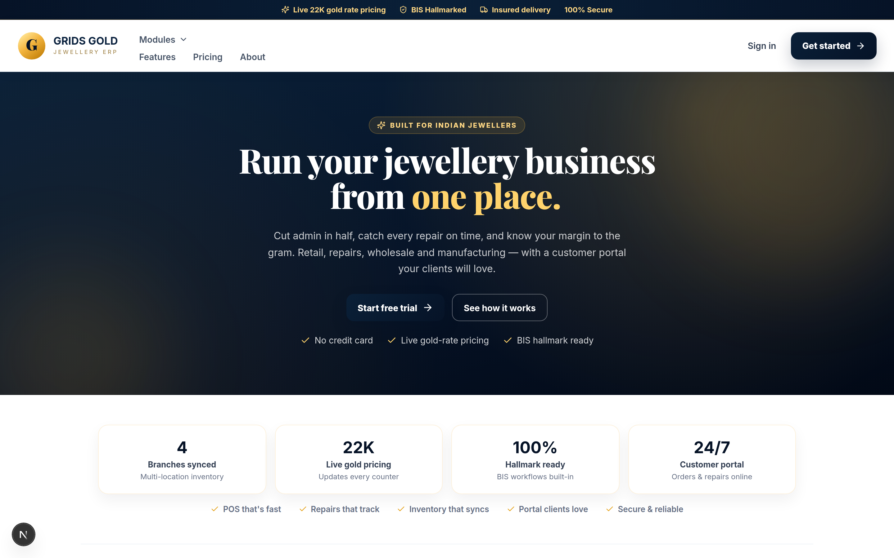
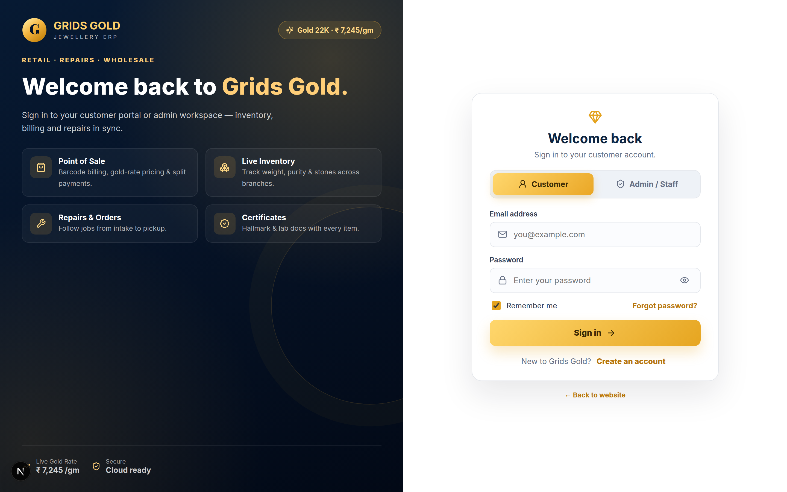
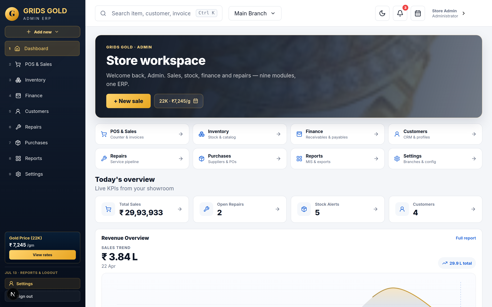

Purpose: Public marketing site. Static content arrays drive sections (hero, stats, modules, pricing). All CTAs route to /login.

// Client component — uses animations & interactive nav "use client"; export default function LandingPage() { return ( <section className="landing-hero"> <h1>Run your jewellery business from{" "} <TypewriterText phrases={["one place.", "every branch."]} /> </h1> <Link href="/login?signup=1"> Start free trial </Link> </section> ); }
export const moduleGroups = [ { label: "Daily operations", items: [ { title: "POS & Sales", href: "/pos" }, { title: "Repairs", href: "/repairs" }, ], }, ]; // moduleHighlights = flatMap(groups) → used in nav + homepage grid
next/link gives client-side navigation to auth without a full reload.
Purpose: Single auth entry for Customer and Admin. URL query ?signup=1 toggles mode. Submit writes to React Context store, then router.push() redirects.

function LoginContent() { const params = useSearchParams(); const isSignup = params.get("signup") === "1"; return ( <AuthPanel initialMode={isSignup ? "signup" : "signin"} /> ); } // Wrapped in <Suspense> — required for useSearchParams()
async function handleSubmit(e) { e.preventDefault(); if (isAdmin) { // Demo credential gate signup({ role: "admin" }); router.push("/dashboard"); return; } if (isSignup) signup({ name, email, role }); else login(email, role); router.push(isAdmin ? "/dashboard" : "/portal"); }
mode (signin/signup) and role (customer/admin). Admin uses hardcoded demo credentials today; Supabase path exists when NEXT_PUBLIC_SUPABASE_* env vars are set. signup() / login() update currentUser in Context and persist to localStorage key gg_state_v4. Sign out clears user and returns to /login.
Purpose: Admin home after login. Reads live ERP data from useStore(), derives KPIs/charts with useMemo, renders inside collapsible AppShell sidebar layout.

export default function DashboardPage() { const { invoices, items, rates, repairs } = useStore(); const trend = useMemo( () => salesTrendFromInvoices(invoices), [invoices] ); return ( <AppShell> <SmoothSalesChart points={trend} /> <TopItemsTable items={...} /> </AppShell> ); }
function smoothLinePath(coords) { // Cubic Bézier between invoice trend points path += ` C ${cp1x} ${cp1y}, ${cp2x} ${cp2y}, ${p2.x} ${p2.y}`; } <div onMouseMove={(e) => pickIndex(e.clientX)} className="dash-chart" > <svg viewBox="0 0 100 100"> <path d={linePath} /> </svg> </div>
useStore() supplies invoices/items/rates; analytics.ts pure functions derive chart series. useMemo avoids recomputing on unrelated re-renders. Chart uses SVG paths (no chart library) with mouse/touch handlers mapping X position to nearest data point. AppShell provides sidebar nav from adminNav.ts (9 modules).
pnpm build prerenders all routes for Vercel